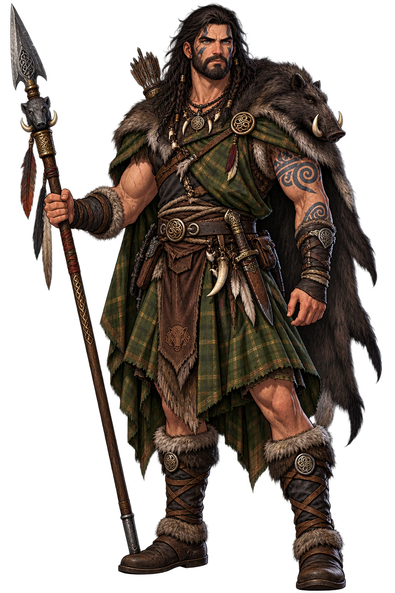
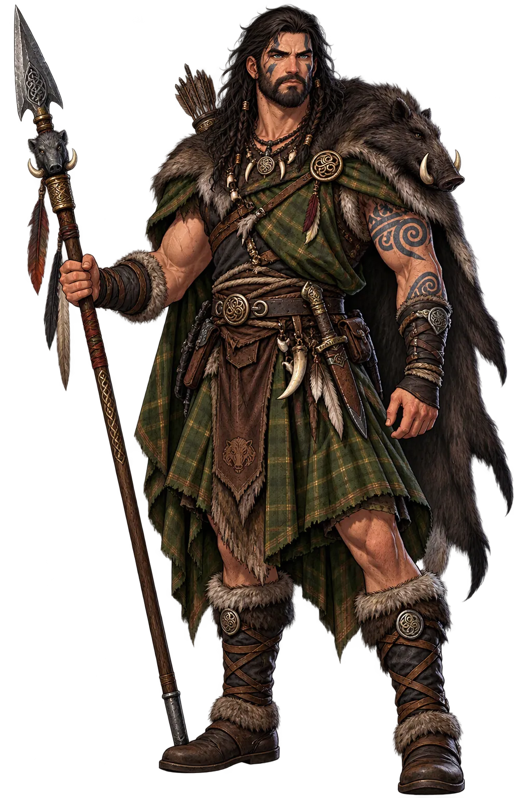

The Cult
No cult; the Mabinogi’s recitation — the cyfarwyddyd tradition of the storyteller — is his memorial. Modern Welsh revival gatherings stage the Fourth Branch most often of all.
Extended Lore
Etymology · Orthography · Cult · Iconography · Reception · Sources

From original script to canonical restoration
The name Gronw Pebr reaches the modern world through scholarly transliteration of the celtic tradition. Because the conventional spelling uses only Latin letters, its canonical and ASCII forms coincide — the tradition it carries is in the name itself, not in diacritics.
Character-by-character philological analysis
| Character | canonical | Name | Block | Phonetic Role |
|---|---|---|---|---|
| G | U+0047 | Latin Capital Letter G | Basic Latin | Same, capitalized |
| r | U+0072 | Latin Small Letter R | Basic Latin | Same |
| o | U+006F | Latin Small Letter O | Basic Latin | Same |
| n | U+006E | Latin Small Letter N | Basic Latin | Same |
| w | U+0077 | Latin Small Letter W | Basic Latin | Same |
| P | U+0050 | Latin Capital Letter P | Basic Latin | Same, capitalized |
| e | U+0065 | Latin Small Letter E | Basic Latin | Same |
| b | U+0062 | Latin Small Letter B | Basic Latin | Same |
| r | U+0072 | Latin Small Letter R | Basic Latin | Same |
This restoration reflects fidelity to the attested tradition, not recovered diacritics: every character of Gronw Pebr already survives in ASCII. What the restoration preserves is the canonical spelling itself — the form scholarship standardised.
How the sacred was kept — rites, sanctuaries, remains
No cult; the Mabinogi’s recitation — the cyfarwyddyd tradition of the storyteller — is his memorial. Modern Welsh revival gatherings stage the Fourth Branch most often of all.
Gronw leaves the spear-stone of the Cynfael valley — a tradition-landmark, not an excavation. The Mabinogi’s manuscripts (White Book, Red Book) are his monument, as they are for the whole Welsh myth-cycle.
How Gronw Pebr was imaged across the ages
The spear-caster behind the bath-house wall, or the stone with the hole through it. His icon is the pierced stone — the landmark that outlived the hand that made it necessary.
The name after its own age — transmission, translation, survival
Celtic studies uses the Fourth Branch as the masterclass of Welsh narrative craft — the legalistic magic, the symmetry of retribution — with Gronw as its necessary third corner. Modern Welsh literature keeps returning to the triangle; and the story’s landscape-pinning is cited wherever myth-and-place is studied.
Gronw is the Welsh cousin of the Indo-European adulter-killer pattern — the lover who strikes the unkillable hero at his one vulnerable posture — but the Mabinogi’s telling is its own: the magic is legalistic, the justice symmetrical, and the villain allowed his one dignified plea. The flower-wife Blodeuwedd’s fate (changed into an owl, shunned by the other birds) outshines his in later retellings; his stone keeps his share.
The Fourth Branch is the most retold of the Mabinogi — Saunders Lewis’s drama Blodeuwedd and a hundred retellings keep the triangle current. The spear-stone tradition fed the Welsh habit of reading the landscape as document; and Gronw’s name, though minor, anchors the Mabinogi’s most exportable story in its most Welsh particulars.
What Gronw Pebr means — beyond the dictionary
Gronw Pebr: the strong one, undone by the one thing strength could not block — the spear he himself had forged for another’s death. Restored plainly, his name keeps the Mabinogi’s lesson in two short words: the stone you ask for may be the only thing the return-cast needs to prove.
Common questions about Gronw Pebr, Lover of Blodeuwedd, and canonical restoration
In reconstructed pronunciation, Gronw Pebr is /ˈɡrɔnuː ˈpɛbr/ — approximately “GRON-oo PEBR” — two words, the second meaning “the strong”.
Gronw Pebr means Gronw the strong in the celtic tradition.
Gronw Pebr is associated with The Spear (He cast the year-wrought, dawn-forged spear through the bath-house wall — the only weapon that could wound Lleu.), Blodeuwedd (The flower-wife he loved — her name means “flower-face”; their plot killed her husband.), The Bath-House (The one door through which Lleu could be killed: standing with one foot on bath and one on goat-skin, spear through the wall.), The Stone (His last plea: a stone between himself and Lleu’s return-cast — the spear went through it, and him.).
Gronw Pebr is written entirely in ASCII letters, so its restoration is about canonical fidelity rather than recovered diacritics: the temple fixes the name in its scholarly standard spelling, attested in the source tradition, instead of leaving it to drift.
“The Flower-Wife’s Plot” — the Math fab Mathonwy story that anchors the mythology of Gronw Pebr, told in full on the lore page.
The philological foundations of this restoration
Every claim on this page is grounded in established scholarship. The orthographic restorations follow disciplinary convention. The etymological chain follows the best available reference works. This is not invention — it is resurrection through scholarship.
You have traced the name from its earliest attestation to its canonical restoration. Now return to the myth. The story is where the name lives.
Back to Lore